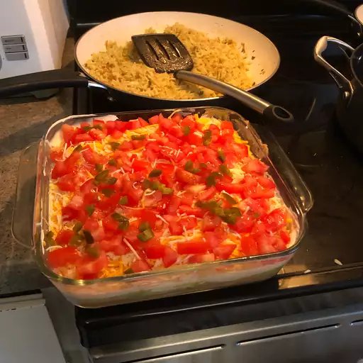

5 Layer Mexican Dip

This 5-layer dip is one of my favorite recipes. Great for football games, tailgates, or any party. Very easy to make!
Description
Ingredients
- 1 ½ cups refried beans
- ¾ cups guacamole
- 1 ½ cups sour cream
- 1 (8 ounce) package shredded Cheddar cheese
- 2 tomatoes, diced
Steps
- Heat refried beans in a microwave-safe bowl in a microwave oven until hot, stirring frequently, about 3 minutes. Spread beans onto the bottom of a serving platter; refrigerate until the beans are cooled completely, about 10 minutes.
- Spread guacamole in a layer atop refried beans; top with a layer of sour cream. Sprinkle cheese over sour cream; top with tomatoes.
- Cover the platter with plastic wrap and refrigerate until cold, about 30 minutes.
Back